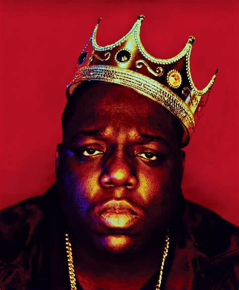

The Notorious B.I.G.
El rapero Notorious BIG, cuyo verdadero nombre era Christopher Wallace nació el 21 de mayo de 1972 en Nueva York, Estados Unidos. Él trabajo con artistas como Sean Combs, Lil' Kim, Faith Evans y Jay-Z. Notorious BIG fue asesinado a tiros el 9 de marzo de 1997 después de una ceremonia de los premios Soul Train Music Awards. Notorious BIG tenía 24 años.
También es conocido con el seudónimo de Biggie Smalls, Biggie, Big Poppa y Frank White.
De 1992 Notorious BIG registros que son numerosas remezclas sobre él. Finalmente, en 1994, lanzó su primer álbum "dispuesto a morir" se va a vender más de cuatro millones de ejemplares. Este álbum trae nueva vida a los americanos de rap y vale la pena muchas recompensas a Notorious BIG A pesar de su notoriedad, Notorious BIG Vivimos en un mundo oscuro e insalubres. El 9 de marzo de 1997, cuando acaba de terminar de grabar su segundo álbum, es asesinado por varias balas disparadas por un desconocido. El asesino nunca se encontró. The Notorious BIG muerte deja un enorme vacío en el paisaje americano de hip-hop y es considerado en la actualidad como uno de los mejores raperos de todos los tiempos.
